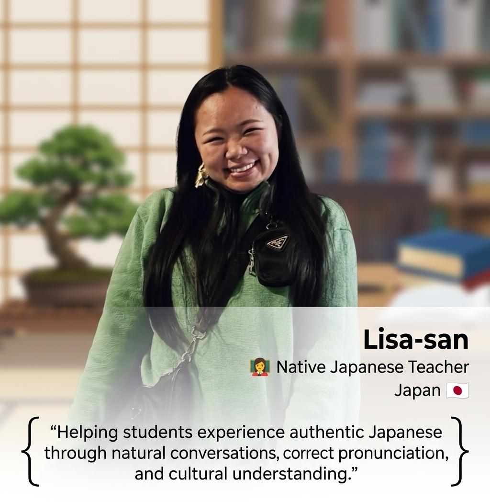

“கற்க கசடறக் கற்பவை
கற்றபின் நிற்க அதற்குத் தக.”
ஒரு விஷயத்தை முழுமையாகவும், சந்தேகமின்றியும் கற்றுக்கொள்ள வேண்டும்.
கற்ற அறிவை வாழ்க்கையில் செயல்படுத்த வேண்டும்.
ஜப்பானிய மொழியை தமிழில் தெளிவாக கற்று, தன்னம்பிக்கையுடன் பேசி, JLPT தேர்வில் வெற்றி பெற்று, உங்கள் கனவு ஜப்பான் பயணத்தை நனவாக்குங்கள்.
KIZASHI Japanese Institute is a premium Japanese language academy in Salem dedicated to helping students speak Japanese confidently while preparing for JLPT examinations.
We believe language is best learned by speaking. Our classes combine Japanese grammar, vocabulary, kanji, listening and daily speaking practice through Tamil, making learning simple and enjoyable.
Build confidence from Day One.
N5 • N4 • N3 Preparation
Study & Work Opportunities in Japan.
Easy to understand explanations for beginners.
Daily conversation practice in every class.
Complete coaching for N5, N4 & N3.
Individual attention for every student.
Regular practice exams to boost confidence.
Guidance for studying and working in Japan.
Students Guided
JLPT Success %
JLPT Levels
Speaking Sessions
📅 Course Duration: 1–2 Years (JLPT N5 • N4 • N3)
🎯 Flexible Course Duration: Customized based on each student's learning goals and requirements.
💻 Classes Available: Online & Offline
🕒 Flexible Class Timings: Classes are scheduled based on your convenience and availability.
🇯🇵 Weekly Native Japanese Tutor Sessions: Practice real-life conversations with our Native Japanese Tutor every week.
📞 Daily 12-Hour Chat & Call Support: Available from 9:00 AM – 9:00 PM.
📚 Exclusive Study Materials: No need to purchase additional books online.
💳 Easy EMI Options: Flexible monthly payment plans available.
💰 Course Fees: Kindly contact the Management for detailed fee information.
Japanese language skills can open opportunities in IT, Automotive, Manufacturing, Electronics, Healthcare, Business and Higher Education.
Daily speaking practice helped me gain confidence in Japanese. The classes were easy to understand through Tamil.
Excellent JLPT coaching with personal attention. Highly recommended for beginners.
Friendly teaching approach and practical speaking sessions every day.
Learn Japanese through Tamil with structured lessons, daily speaking practice, JLPT preparation, and practical communication skills.

Join KIZASHI Japanese Institute and begin speaking Japanese with confidence.
Enquire on WhatsAppSalem, Tamil Nadu
8883677260
6363736137
8883677260